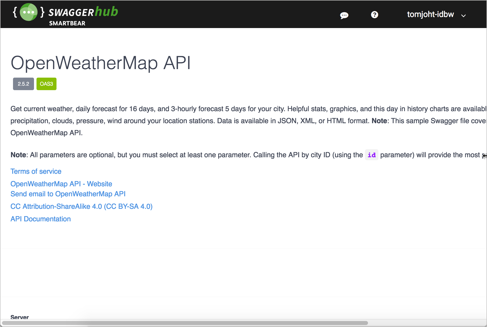

OpenAPI and Swagger
By Tom Johnson / @tomjohnson
idratherbewriting.com
Slides available at
idratherbewriting.com//learnapidoc/slides/openapi_and_swagger.html
What I'll talk about

- Concepts more than technical details
- The kind of documentation engineers want
- Swagger UI and how to use it
- OpenAPI specification and how to create them
- Other interactive documentation platforms
Where to find more information
What engineers want in documentation

Why interactivity with API docs?

Swagger UI Petstore Demo

Activity 1: Explore Swagger UI through the Petstore Demo
OpenAPI specification

Objects in OpenAPI spec
openapiinfoserverspathscomponentssecuritytagsexternalDocs
OpenAPI spec at a glance
paths:
/pets:
get:
summary: List all pets
operationId: listPets
tags:
- pets
parameters:
- name: limit
in: query
description: How many items to return at one time (max 100)
required: false
schema:
type: integer
format: int32
responses:
'200':
description: An paged array of pets
headers:
x-next:
description: A link to the next page of responses
schema:
type: string
content:
application/json:
schema:
$ref: "#/components/schemas/Pets"
default:
description: unexpected error
content:
application/json:
schema:
$ref: "#/components/schemas/Error"
YAML syntax

Spec-first development versus code annotations

Forms simplify authoring

Standardized terminology

Swagger Editor

Tutorial for building OpenAPI spec doc

(See also Peter Gruenbaum's resources (STC preso and Udemy course)
Activity: Edit an OpenAPI specification document
Not just for interactive documentation

Swagger UI

Activity: Build a Swagger UI file
Tools can programmatically process the spec

SwaggerHub
Stoplight

Readme
Spectacle

APIMATIC
Activity: Work with the OpenAPI spec in Stoplight
Integration challenges

Questions?

Credits
Some graphics by: Vecteezy.com and the Noun Project.